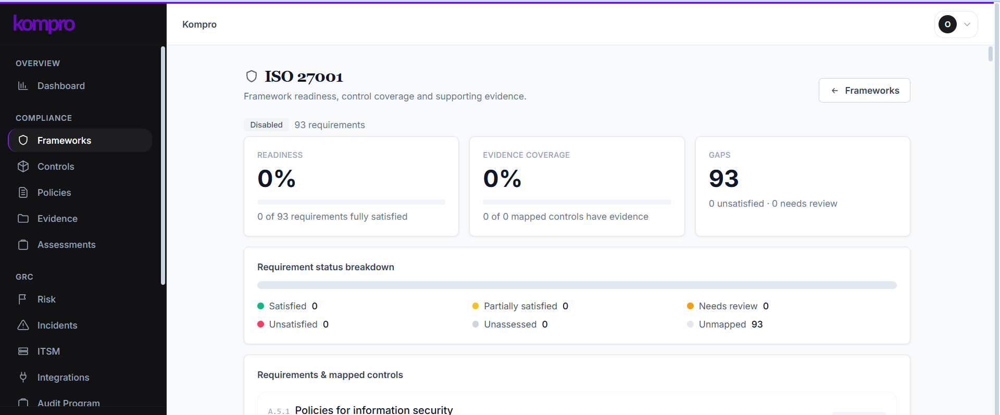

Self-hosted by design
Run Kompro on Postgres you provision. Your compliance data never leaves your own database or your own network.
Open source · Self-hosted · AGPL v3
Kompro helps organizations define, assess, and continuously maintain their compliance posture without handing their data to a third party. Framework agnostic, evidence driven, and yours to control.
Policies, controls, evidence, risks, and audits, all visible and accountable in a single dashboard you host yourself.

One platform for policies, controls, evidence, risk, and audits. Built so your compliance state is the single source of truth.
Run Kompro on Postgres you provision. Your compliance data never leaves your own database or your own network.
Start from ISO 27001, SOC 2, or GDPR, or model your own structure. Map one control across many frameworks.
Link evidence to controls and assessments with a full history, so every claim is backed by proof.
Track risks, treatment plans, and security incidents in the same system your auditors already trust.
Plan internal and external audits, capture nonconformities, and close corrective actions with a clear trail.
Licensed under AGPL v3. Inspect the code, modify it, and deploy it yourself with no vendor lock-in.
Compliance data is among the most sensitive information an organization holds. Kompro keeps it within your perimeter.
The organization's compliance state is the source of truth. Frameworks are just different views over it.
Kompro design principle
Questions about self-hosting, deployment, or the project? Reach out directly.
Contact Me